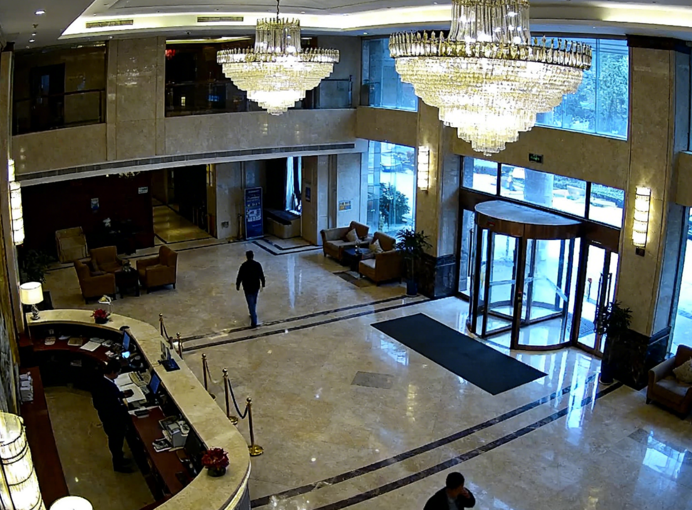
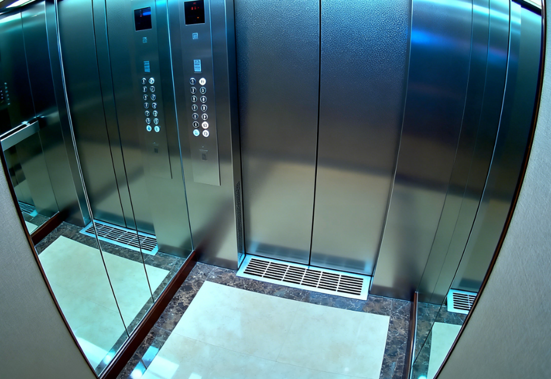

安保工作台
2025-11-20 |
14:32:05
今日重要提醒
> 今日排班：赵强 (08:00-16:00) | 王刚 (16:00-24:00)
> 安保绩效：响应时间优秀 | 事件处理率 100%
客房记录
所有客房记录
显示 1-8 条，共 24 条记录
监控系统
实时监控
摄像头
在线

摄像头
在线

摄像头状态
在线摄像头
42/45
离线摄像头
3/45
离线摄像头列表
CAM-23 - 东侧走廊
离线3小时
维修中
CAM-31 - 储藏室
离线1小时
调查中
CAM-42 - 停车场B区
离线15分钟
调查中
巡逻记录
新建巡逻记录
历史巡逻记录
2025-11-19 路线B - 客房楼层1-10层
昨天 14:30正常巡逻，发现143号房间有异常声音，已记录并上报。其他区域无异常。
巡逻人：赵强
2025-11-18 路线A - 大堂及前台区域
2天前 10:15发现一名可疑人员在酒店外徘徊，已上前询问并记录身份信息。内部区域一切正常。
巡逻人：赵强
2025-11-17 路线C - 客房楼层11-20层
3天前 16:45发现902号房间有异常噪音，调查后发现是客人音响设备问题，已协助解决。
巡逻人：王刚
显示 1-3 条，共 24 条记录
工作日志
新建工作日志
历史工作日志
2025-11-19 工作日志
昨天 18:30今日处理安全警报5个，完成巡逻4次。143号房间声音异常持续，需要进一步调查。监控系统运行正常。
2025-11-18 工作日志
2天前 18:45今日工作正常，处理安保请求3个。发现一名可疑人员在酒店外徘徊，已记录并上报。监控摄像头维护完成。
2025-11-17 工作日志
3天前 18:20今日处理902号房间噪音投诉，协助客人调整音响设备。完成所有巡逻路线，无异常情况报告。
显示 1-3 条，共 24 条日志
员工论坛
最新讨论
最近监控系统频繁报错，大家有遇到吗？
2小时前东侧走廊的摄像头最近经常离线，系统显示连接错误。已经检查过线路，看起来没问题。有人遇到类似情况吗？
发布者：安保部-赵强 · 分类：技术问题
回复：4 | 查看：28
143号房间的异常声音持续好几天了
5小时前这几天143号房间一直有奇怪的声音警报，但每次巡逻检查都没发现异常。客人也说没事。有点诡异...
发布者：安保部-王刚 · 分类：工作交流
回复：23 | 查看：156
新安保协议更新通知
5小时前管理员RIKI更新了安保协议，增加了对特定房间的监控权限和异常报告流程...
发布者：分析部主管-王芳 · 分类：系统更新
回复：7 | 查看：42
夜间巡逻注意事项提醒
1天前最近夜间巡逻时发现一些区域照明不足，已报修。大家巡逻时请特别注意安全...
发布者：安保部-李强 · 分类：工作交流
回复：5 | 查看：31
关于291号房间的一些发现
2天前监控显示291号房间客人几乎从不离开房间，运动传感器显示异常规律的活动模式...
发布者：安保部-赵强 · 分类：安全监控
回复：3 | 查看：24
酒店安保培训计划
3天前下周三将举行新的安保培训，内容包括异常行为识别和紧急情况处理。请所有安保人员参加...
发布者：安保经理-陈伟 · 分类：工作交流
回复：12 | 查看：87
显示 1-6 条，共 42 条话题
论坛分类
工作交流
42
安全监控
28
技术问题
15
系统更新
9
部门通知
34
休闲娱乐
67
热门话题
143号房间的异常声音持续好几天了
回复 23 · 查看 156
关于291号房间的一些发现
回复 3 · 查看 24
新安保协议更新通知
回复 7 · 查看 42
最近监控系统频繁报错，大家有遇到吗？
回复 4 · 查看 28
论坛规则
- • 禁止讨论敏感安保信息
- • 所有工作交流必须专业
- • 发现异常请立即报告管理员
- • 保持专业态度，尊重同事
- • 遵守公司保密协议
> 系统提示：您的所有活动都会被记录